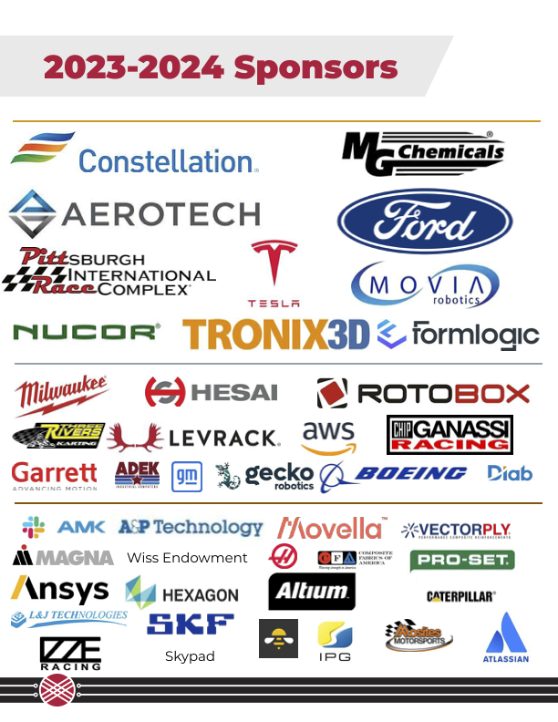

Carnegie Mellon Racing Perceptions Library for 22a¶
This library is a collection of perception algorithms for the 22a racecar for Carnegie Mellon Racing. Carnegie Mellon Racing is a premier student organization at Carnegie Mellon University that designs and builds autonomous vehicles to compete in the annual Formula Student Driverless competition. This workspace works in combination with the driverless workspace that can be found on the Carnegie Mellon Racing GitHub .
What is Perceptions?¶
Perceptions is the process of interpreting sensor data to understand the environment around the car. This is a crucial part of the autonomous driving stack as it provides the car with the information it needs to make decisions. The perception stack on this car consists of a variety of sensors:
Together, these sensors provide the car with a complete view of the track and allow for an accurate understanding of the cones. From this information, we can run a midline algorithm to determine the best path through the cones.
There are also a variety of other algorithms that are used to interpret the data from these sensors. These include object detection, lane detection, and cone detection. These algorithms are used to provide the car with a complete understanding of the environment around it. To understand the specifics of these algorithms, please refer to the documentation.
Getting Started¶
Setup¶
Clone the Repository:
git clone [repository-link] cd PerceptionsLibrary22a
Setup Virtual Environment: Ensure you have Python 3.8 installed, then create a virtual environment:
python3.8 -m venv env source env/bin/activate
Install Dependencies:
pip install -r requirements.txt
Set PYTHONPATH: To ensure
import perc22aworks in any script, add the absolute path of thePerceptionsLibrary22ato yourPYTHONPATH:echo "export PYTHONPATH=\"$(pwd):$PYTHONPATH\"" >> ~/.zshrc # or ~/.bashrc source ~/.zshrc # or ~/.bashrc
Verify Setup: Confirm the path was correctly added by echoing the
$PYTHONPATH:echo $PYTHONPATH
Test the setup:
python scripts/test_setup.pySuccessful output:
"Running 'import perc22a' successful".
Loading Data¶
Download Data: Fetch the data from this Google Drive Link and place the
<name>.tar.gzfiles in thedata/raw/directory. Note: The files are large and can expand to more than 10GB when extracted.Extract Data:
tar -zxvf data/raw/<name>.tar.gz
This creates a
data/raw/<name>directory containing numerousinstance-<n>.npzfiles, which represent snapshots of sensor data during track testing.Use DataLoader: The
DataLoaderclass, found indata/utils/dataloader.py, provides a convenient method for data access.To demonstrate its use:
python3 scripts/load_data.pyThis displays a
cv2window. Click on the image and press any key to navigate through the data. To exit, either hit<Ctrl-C>in the terminal and press a key in thecv2window or continue pressing keys until all images are cycled through.
Sponsors¶
None of this would be possible without our absolutely amazing sponsors!
